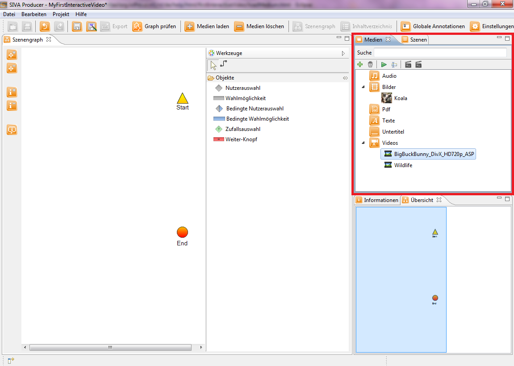

Hinzufügen von Mediendateien
Nachdem Sie das Projekt nun erfolgreich angelegt haben, können Sie nun Medien laden, die sodann im Medienrepository angezeigt werden.
Klicken Sie nun auf den "Medien laden"-Button in der Symbolleiste ("+"-Button). Es öffnet sich das Öffnen-Fenster, in dem Sie die Datei auswählen, die Sie laden möchten.

Nachfolgende Medienarten können ausgewählt werden:
- Video
- Audio
- Bild
- Pdf
- Text
Bitte laden Sie im Rahmen dieses Tutorials zwei Videodateien und eine Bilddatei.
Danach müsste ihr Medienrepository ungefähr aussehen wie Sie es auf dem nachfolgenden Bild sehen können.

Als nächstes müssen die Videos in Szenen umgewandelt bzw. geschnitten werden, um sie im Szenengraph verankern zu können, damit sie Teil des interaktiven Videos werden könnnen.
Sie können dies auf zwei verschiedene Arten machen, indem sie einen Rechtsklick auf ein Video machen und Klick auf:
- Sie möchten, dass das Video komplett als Szene in Ihrem interaktiven Video erscheint: Szene über komplettes Video erstellen
- Sie möchten, dass nur ein Ausschnitt als Szene in Ihrem interaktiven Video erscheint: Szene bearbeiten
Bevorzugen Sie die erste Möglichkeit, ein Video komplett als Szene zu übernehmen, erscheint das Video danach komplett als Szene im Szenerepository.
Entscheiden Sie sich für die zweite Möglichkeit, ein Video zu schneiden, wird Ihnen dies im nächsten Menüpunkt erklärt.
Wichtig für dieses Tutorial ist, dass Sie drei Szenen in das Szenerepository einfügen.
Klicken Sie bitte für die Bearbeitung der Szenen auf den nächsten Menüpunkt "Schneiden eines Videos" im Hilfeverzeichnis auf der linken Seite oder auf nachstehenden Link.
Schneiden eines Videos
Merke: Ein Video muss in eine Szene umgewandelt bzw. unterteilt werden, damit es überhaupt in das interaktive Video integriert werden kann.
Merke: Es muss mindestens ein Video geladen werden, um ein interaktives Video zu erstellen!